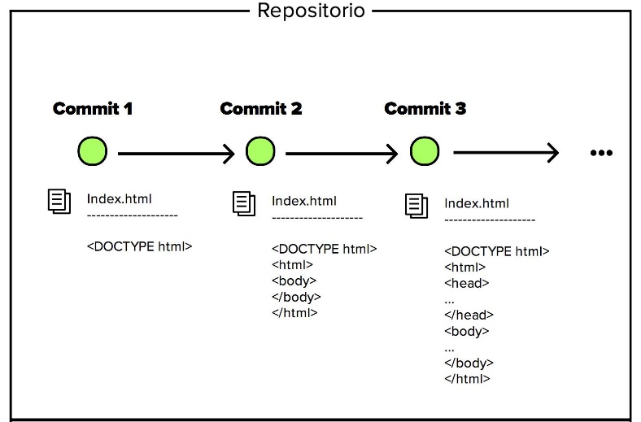

Que es Git
Es un sistema de control de versiones cuyo objetivo gestionar los cambios de código realizados sobre un repositorio por una gran variedad de programadores. Git es multiplataforma, por lo que puedes usarlo y crear repositorios locales en todos los sistemas operativos más comunes, Windows, Linux o Mac. Este está compuesto por cuatro elementos importantes:
Blob: Almacena datos de archivos
Tree: Es un directorio, que puede poseer conjuntos de trees o Blobs.
Commit: Contiene la información de los Trees en un determinado instante, almacenando la información de los cambios realizados.
Tag: Se usa para marcar un commit como especifico.

https://lh4.googleusercontent.com/mht2Evogrgeiwxm09QMu3nw_FxE7b2nzctnsPa_KJgx-xe0MMutvmybjp2jCNS5P5FRfp5UBUgiuaZIc6GGnURiZBolMp2XQjWeCVObsEJfwEup_9B2QbJohVcFp2NiVwg